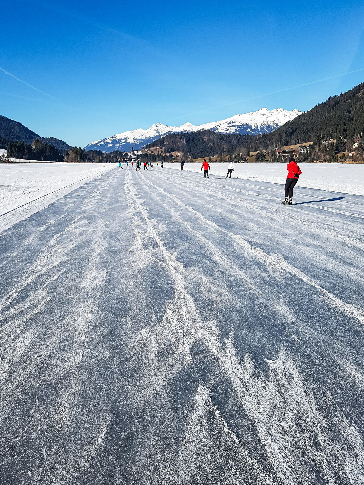

Schaatsreizenop natuurijs
Kleinschalige schaatsreizen op natuurijs in Zweden, Finland en Oostenrijk, persoonlijk geregeld door Joey.
Zweden
- Orsa
- Geveegde baan van zo’n 15 kilometer
- Falun
- Historisch ijs, rode mijngebouwen
- Luleå
- Natuurijsroute langs de bevroren Botnische Golf
- Dagtocht vanuit Sälen
- Geveegde baan van 12 kilometer
- Wellness & schaatsen
- Comfortabel hotel met wellness
Finland
- Punkaharju
- Saimaameer, huisjes met sauna
Oostenrijk
- Weissensee
- Bekend van de Alternatieve Elfstedentocht

Scan en bekijk alle reizen
Ook: schaatslessen in Leeuwarden en schaatsonderhoud.
novakse.com
- +31 6 17467643, ook via WhatsApp
- schaatsennovakse@outlook.com
- Instagram @schaatsreizennovakse